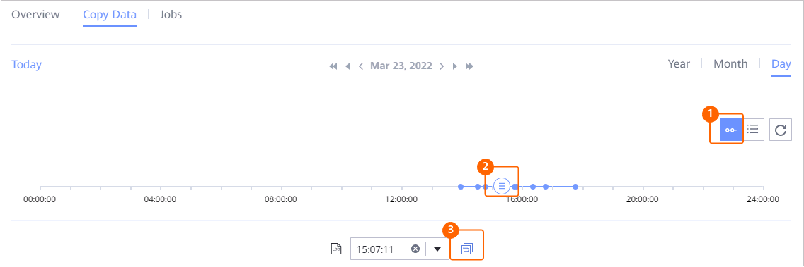

This section describes how to restore an HBase backup set that has been backed up to the original or a new location.
Context
Backup copies, replication copies, archive copies, or imported copies can be used for restoration. Restoration to the original location or a new location is supported. Note that restoration to the original location using a replication copy is not supported, and restoration to the original location is not supported after a replication copy is archived.
Procedure
- Choose Explore > Copy Data > Big Data > HBase.
- You can search for copies by resource or copy. This section describes how to search for copies by resource.
On the Resources tab page, locate the backup set to be restored based on the backup set name and click the backup set name.
- Click Copy Data and select the year, month, and day in sequence to locate the copy.
If
 is displayed below a month or day, a copy is generated in that month or day.
is displayed below a month or day, a copy is generated in that month or day. - Restore data to a specified point in time or using a specific copy.You can restore data to a specified point in time or using a specific copy.
- Restoring data to a specified point in time or using a specific copy
- Restoring data using a specific copy

- Restoring data to a specified point in time

Data can be restored to a specific point in time in the blue part on the timeline.
 indicates that a full backup copy or forever incremental (synthetic full) copy exists at this point in time. If you want to perform point-in-time restoration, ensure that a non-log backup copy exists at or before the point in time to which you want to restore data and that logs have been backed up after the point in time.
indicates that a full backup copy or forever incremental (synthetic full) copy exists at this point in time. If you want to perform point-in-time restoration, ensure that a non-log backup copy exists at or before the point in time to which you want to restore data and that logs have been backed up after the point in time.
- For 1.5.0, a maximum of 100 copies can be displayed on the timeline. You can click
 to view all copies.
to view all copies. - During point-in-time recovery, the information about the copy used for restoration cannot be obtained on the management page. Therefore, users cannot view the copy information of the restoration job on pages of the restoration job and related events.
- For 1.5.0, a maximum of 100 copies can be displayed on the timeline. You can click
- Restoring data using a specific copy
- Restoring the HBase backup set to the original or a new locationTable 1 describes the related parameters.
Table 1 Restoring HBase namespaces or tables Parameter
Description
Restore To
Selects either Original location or New location.
Target Cluster
If you select New location for Restore To, choose the target HBase cluster for restoration.
Namespace
If you select New location for Restore To, choose the target namespace for restoration.
Please select
If a table exists in the restoration path, replace or skip the existing table.
- Ignore the existing table: Tables with the same names are skipped and are not replaced.
- Replace the existing table
Temporary Directory
Stores log files generated during restoration. This parameter needs to be set only when Log Backup is used for restoration. Ensure that the directory exists in the HBase cluster with sufficient space.
- Click OK.
- Restoring data to a specified point in time or using a specific copy